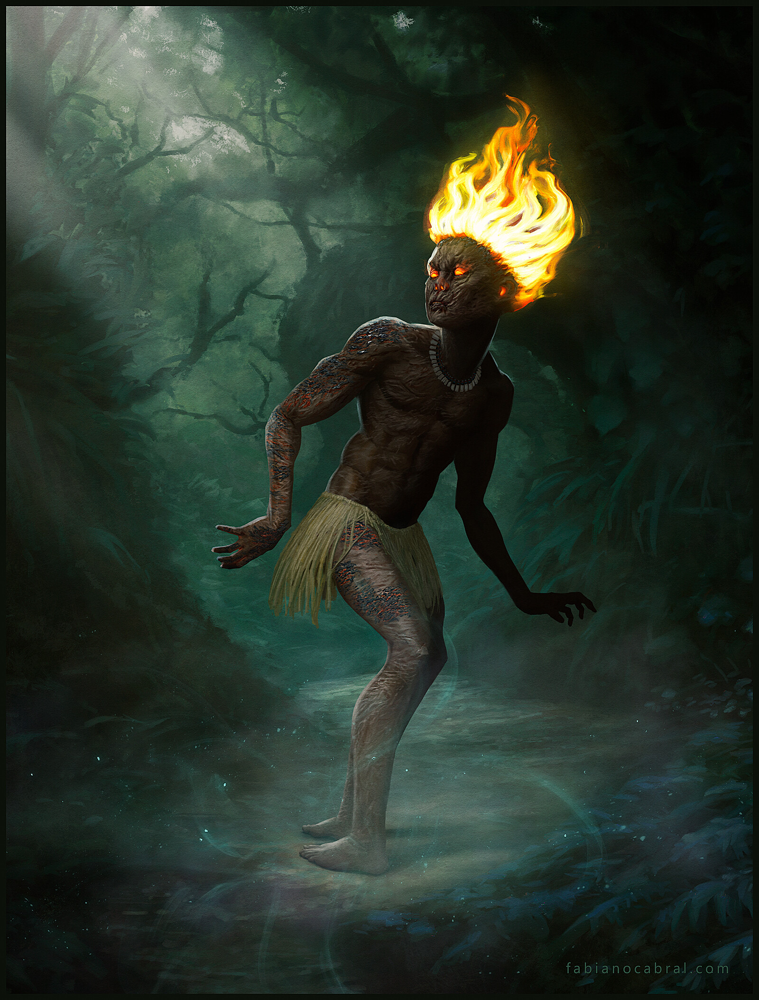

Curupira
O curupira é uma das lendas do folclore brasileiro. Fala de um ser mítico que protegia a floresta contra caçadores e contra aqueles que derrubavam as árvores. "O curupira, um dos personagens mais famosos do folclore brasileiro, é conhecido como um ser mítico que protege a floresta. Sua lenda tem origem nos povos indígenas, sendo muito famosa no Norte do Brasil, sobretudo no Amazonas e Pará. Essa lenda é bastante antiga, havendo menção a ela do século XVI."
Lenda do curupira
O curupira é retratado frequentemente como um anão que possui os cabelos vermelhos e os pés ao contrário (com os calcanhares para frente). É importante reforçar que a descrição física do curupira pode variar de acordo com o local em que a lenda é reproduzida. Em certos locais, o curupira é careca; em outros, tem o corpo cabeludo e dentes verdes. De toda forma, as características que se sobressaem são as citadas: baixa estatura, cabelos vermelhos e pés ao contrário. Além disso, destaca-se sua grande força física. O curupira como protetor da floresta voltava-se contra todos aqueles que a destruíam e, por isso, era visto com grande temor pelos indígenas. Os indígenas acreditavam que o curupira aterrorizava e matava aqueles que entravam na floresta para caçar ou derrubar árvores. O pavor era tão grande que os indígenas ofereciam presentes quando entravam na floresta para impedir que fossem vitimados pelo curupira. A lenda fala que o curupira adorava receber fumo e cachaça como presentes. Além de aterrorizar os caçadores, o curupira também era responsável por fazê-los se perder na floresta e esquecer o caminho pelo qual sairiam dela. Uma forma de atormentar os caçadores era o ato de o curupira assoviar continuadamente. Para fugir dele, caso ele te encontre no meio da floresta, é necessário realizar um nó em um pedaço de cipó. Agora, achar por conta própria o curupira na floresta é quase impossível, pois seus pés ao contrário tornam sua localização improvável. O curupira é um habitante nato das florestas, então, para encontrá-lo, é necessário adentrar na mata densa. Sendo assim, esse ser evita estar nos locais com grande presença humana, somente indo atrás de humanos quando eles entram na floresta para caçar ou derrubar árvores."
fonte:https://www.artstation.com/artwork/YKbmod
De onde vem o nome curupira?
Curupira é oriundo do tupi e existe divergência entre os especialistas a respeito do seu significado. A definição mais conhecida é a que determina que curupira significa “corpo de menino”, mas existem outras definições, como “coberto de pústulas” ou “pele de sarna”."
Quando surgiu a lenda do curupira?
"Não se sabe exatamente quando surgiu a lenda do curupira, mas se sabe que ela é uma das mais antigas lendas brasileiras porque foi uma das primeiras a serem mencionadas pelos portugueses que se estabeleceram no Brasil. Em 1560, o padre jesuíta José de Anchieta, estabelecido em São Vicente (atual litoral do estado de São Paulo), fez uma menção ao curupira."